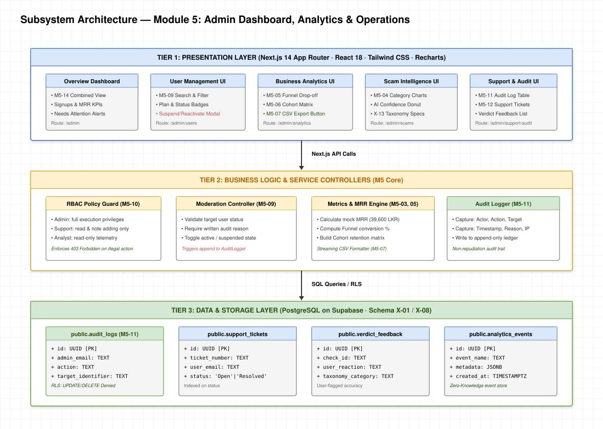
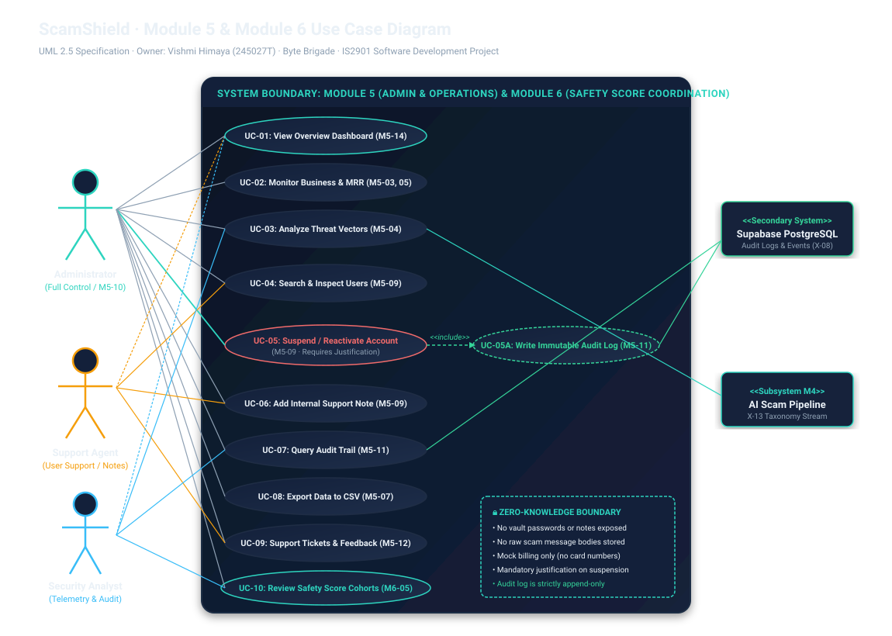
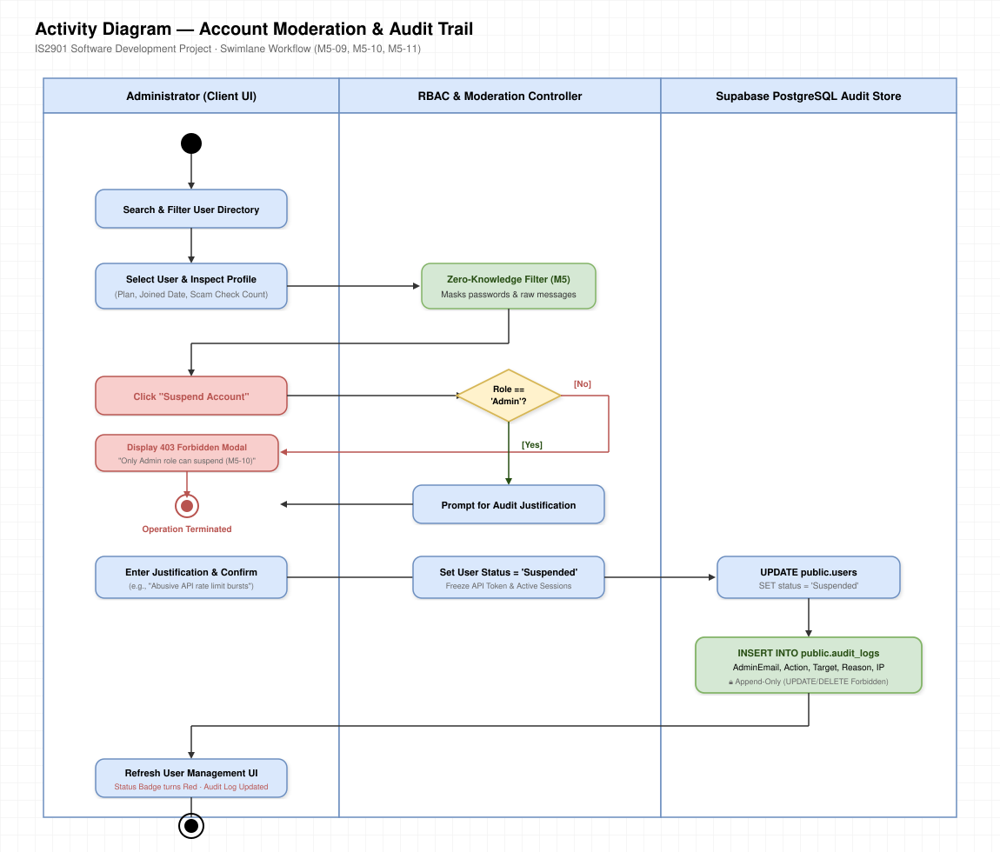
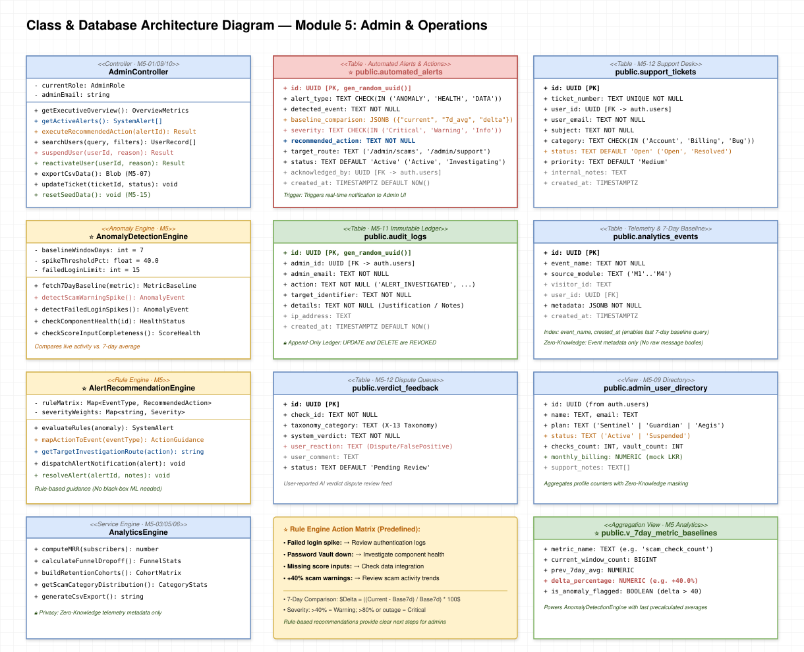

Module 5: Admin Dashboard, Analytics & Operations
IS2901 Individual Contribution
Draw.io Style UML & Architecture Specifications
All diagrams exclusively focus on Module 5 specifications
1. M5 Subsystem Architecture
2. M5 Use Case Diagram
3. M5 Activity Diagram
4. M5 Sequence Diagram
5. M5 Class & Database Diagram
1. Module 5 Subsystem Architecture (3-Tier Layered)
Presentation Layer (Next.js UI & Alert Banners), Business Logic Layer (⭐ Anomaly & Trend Detection Engine with 7-Day Baseline, ⭐ Alert & Recommended Action Rule Engine, RBAC & Audit Loggers), and PostgreSQL Data Layer (automated_alerts, baseline views).
Download SVG

2. Module 5 Use Case Diagram (UML 2.5)
Actors (Administrator, Support Agent, Security Analyst), functional use cases, ⭐ Monitor Automated Alerts, ⭐ Detect 7-Day Baseline Anomalies (+40% Spikes), ⭐ View Recommended Admin Actions (Rule Matrix), and Execute Investigation.
Download SVG

3. Module 5 Activity Diagram: Automated Alerts, Anomaly Detection & Recommended Actions
Swimlane workflow showing live telemetry capture, 7-day rolling baseline comparison, threshold anomaly triggering (+40% scam spikes, vault outages), rule-based action recommendations, admin 1-click execution, and immutable audit logging.
Download SVG

4. Module 5 Sequence Diagram: Baseline Anomaly Spikes, Alert Dispatch & Recommendation Execution
Lifeline sequence showing telemetry querying, Anomaly Engine 7-day baseline comparison (+40% scam check surge), Recommendation Rule Engine action mapping, automated_alerts insertion, and admin investigatory action logging.
Download SVG

5. Module 5 Class & Database Architecture Diagram
AdminController, ⭐ AnomalyDetectionEngine (7-day baseline, spike detection), ⭐ AlertRecommendationEngine (rule-based guidance), public.automated_alerts, public.v_7day_metric_baselines, audit_logs, and support tables.
Download SVG
